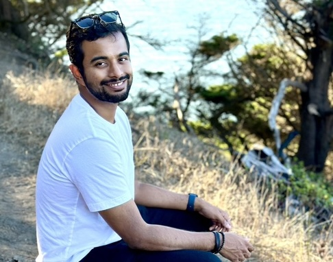

### Current PhD Students

<table style="border: none;">
  <tr>
    <td style="width: 18%; padding: 10px; border: none;"></td>
    <td style="width: 18%; padding: 10px; border: none;">
      <p style="font-size: 18px;"><a href="https://adigasudarshan.com/"> Sudarshan Adiga</a></p>
    </td>
    <td>
      <p>Sudarshan Adiga started the Ph.D. program in the Electrical and Computer Engineering Department at the University of Arizona in 2019. He obtained his M.S. degree from University of Arizona in 2019, and his B.E. degree from Ramaiah Institute of Technology in 2015. His research interests include Machine Learning, Information Theory, and Wireless Communications. He served as a research intern at NTT Docomo in 2022 and at Marvell Technology in 2023.</p>
    </td>
  </tr>
</table>
